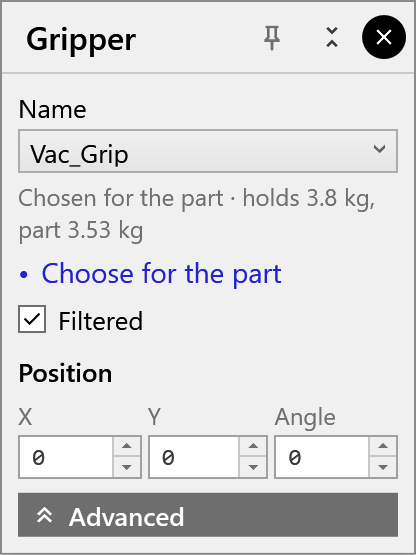
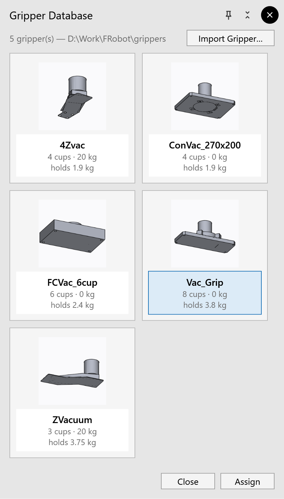
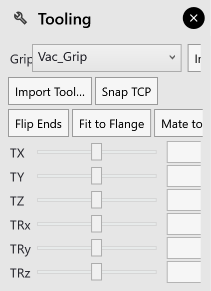

Choosing a gripper yourself
A gripper you pick yourself is assigned by hand. New solutions on the same screen keep it instead of choosing one. That lasts until you:
-
click Choose for the part;
-
open a cell config;
-
switch the robot;
-
or open another part or solution.
The Gripper panel
Click the gripper in the 3D view. The Gripper panel opens.

| Control | What it does |
|---|---|
Name |
Picks another gripper from the catalog and mounts it (assigned by hand) |
the line below the name |
Why this gripper is mounted, and whether it can hold the part; red when it can’t |
Choose for the part |
Lets FRobot choose again, as a new solution does. If that mounts another gripper or turns the grip, the cycle is planned again with it. |
Filtered |
Lists only the grippers that can be used for this part |
Position X, Y |
The grip point on the part: its offset from the part’s centre, in mm |
Position Angle |
The gripper’s turn on the part, about the approach direction, in degrees |
The line below the name begins with where the gripper came from:
-
Chosen for the part;
-
Assigned by hand;
-
As saved in the solution;
-
Mounted with the cell.
|
Note
|
Changing the grip position or angle plans the cycle again, so waypoints you edited by hand are lost. |
When the robot is at the centering table, clicking the gripper opens Gripper · Centering instead.
-
It sets the grip for picking the part up again there.
-
Use pickup grip takes the same grip as at the pickup.
-
It has no Choose for the part.
|
Note
|
Advanced ▸ Set Grip Plane and Use Jaw Grip are not available in this version. |
The Gripper Database
database ▸ Grippers opens the Gripper Database. It shows every gripper in the catalog as a tile, with its cups and how much it holds.

-
Click a tile to select it. The window opens with the mounted gripper selected.
-
Click Assign to mount it. Close leaves the mounted gripper as it is.
Assign always counts as a choice by hand, even on the gripper already mounted. Automatic choice then stops: see above.
Import Gripper… adds a gripper to the catalog: see Importing a gripper.
The Tooling panel
settings ▸ Tooling offers the same choice in its Gripper list, and Import Gripper….

The panel’s other controls (Import Tool…, Snap TCP, Flip Ends, Fit to Flange, Mate to Flange and the TX … TRz sliders) are for mounting a tool mesh by hand.
|
Note
|
Leave Flip Ends and Fit to Flange alone for a gripper from the catalog. They fit the mesh anew and pick a new TCP, which undoes how the catalog mounts it. Snap TCP is explained in The TCP. |
After you change the gripper
FRobot keeps the waypoints and solves them again for the new gripper’s TCP.
-
Unreachable waypoints: one the robot can no longer reach keeps its old joint values. The status line says how many: Program re-solved for the new TCP (N ok, M now unreachable — regenerate for full coverage).
-
No re-planning: FRobot does not plan around new collisions.
-
No re-check: the phase strip is not checked again.
Click recompute afterwards: see Re-planning.